The documentation is written in a step by step format. Once you finish reading it you will know how to install and customize the theme to your needs.
If you have not set up your Wordpress installation yet, download the latest Wordpress version here: http://wordpress.org/download/.
You can find info on installing wordpress here:
http://codex.wordpress.org/Installing_WordPress.
It is worth checking out their famous 5 minute WP install tutorial.
Note: In this documentation I am assuming that Wordpress is installed directly in the root of your server. If it is not, you may need to adapt some of the file and folder paths provided below in the documentation to reflect that.
Note: I am assuming your starting point is a clean default wordpress instalation. Please only make configurations when you are asked to as this will ensure that you install and configure the theme without a problem. Thanks!
FirstOne can be installed in two different ways:
Note: because the themes file size is big, depending on some server configuration you might not be able to install it through WordPress and might need to upload it through ftp.
Installing a theme through wordpress is quite a simple process. After you have logged into wordpress account and are ready to go, in the admin panel's sidebar navigate to appearance and then select themes. After that, click on the install themes tab and select upload from the navigation bar right below it. Click "choose file" button and locate your theme zip file (firstone-wp.zip) then hit install now. After FirstOne has been installed locate and click activate.
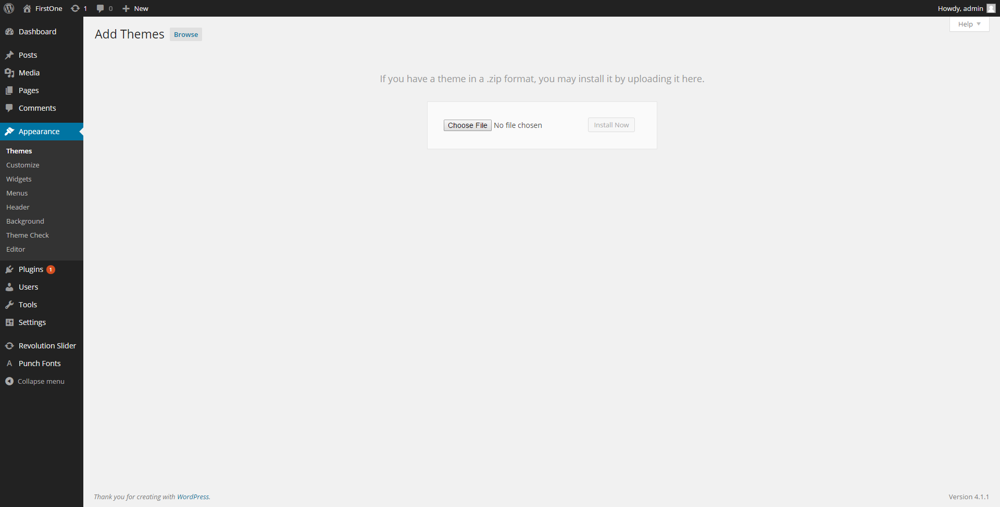
Install through WordPress
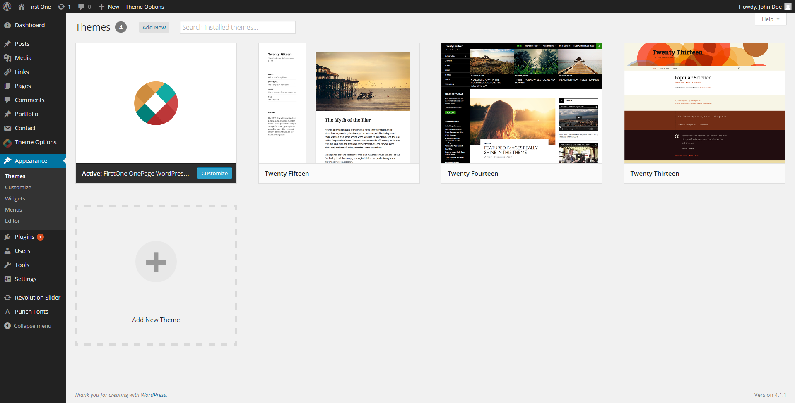
Install Reguired Plugins
After you activate the FirstOne theme you will see a notice that the theme requires the Visual Composer and Revolution Slider Plugin and recommends Contact form 7.
Click Begin installing plugins and follow the steps needed to install and activate the plugins.
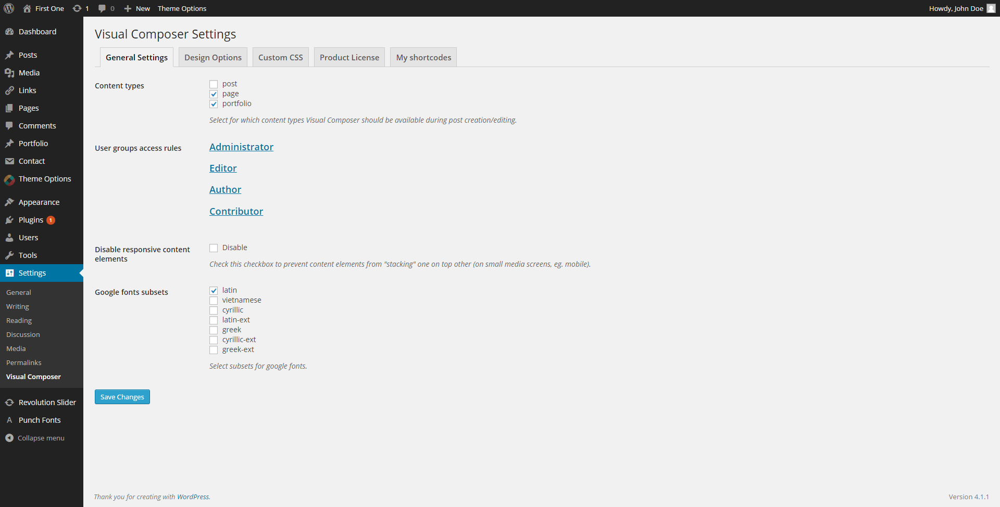
Install Reguired Plugins
You can control Visual Composer global settings such as disable/enable in a post type and user roles that can use a shortcode.
This option allows you to choose which post type should have the Visual Composer feature. Please note that only post types that have WP editor can use this feature, so for example slides will not have the Visual Composer feature.
This option will give you the ability to select which shortcode should appear in the specific user role. This is useful when you give subscribers the ability to post, because you can disable some shortcodes for them.
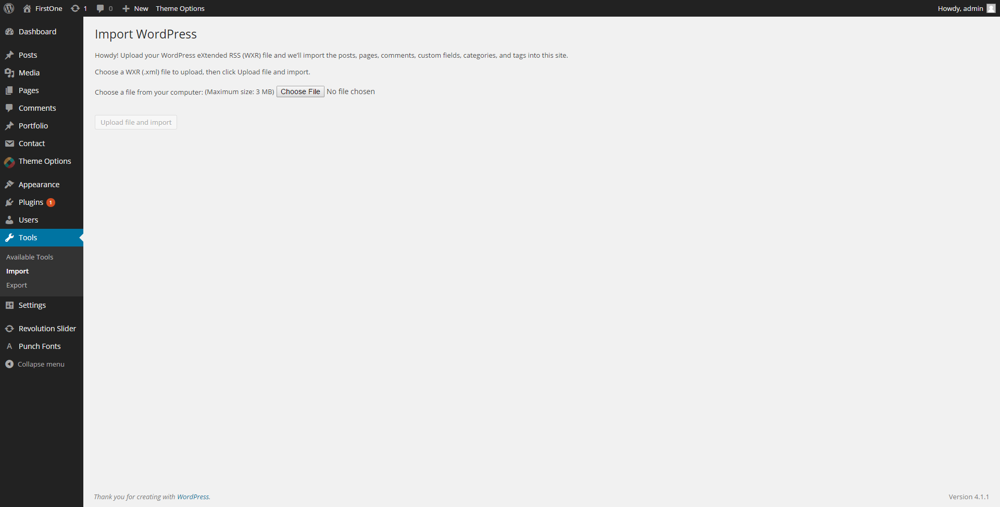
Install Demo Content
After importing the demo content it is time to import the demo content for the revolution slider:
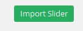
Import Slider
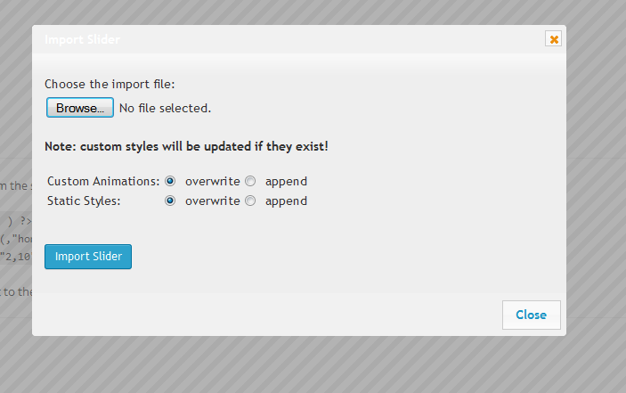
Select demo slider to import
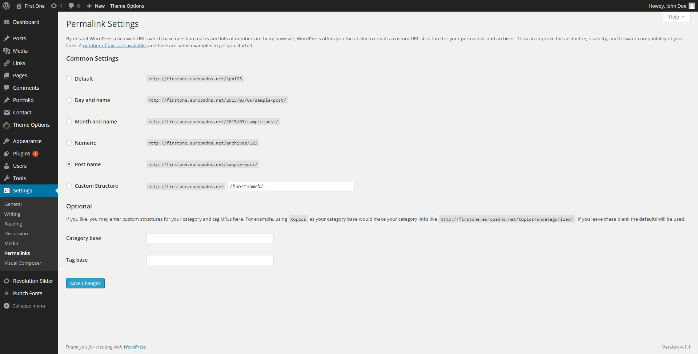
Permalink settings
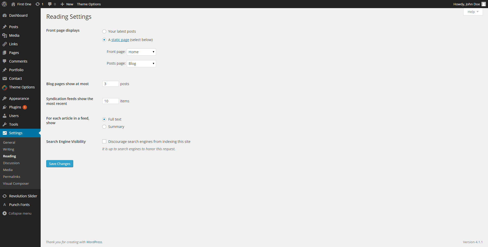
Set up home page and blog page
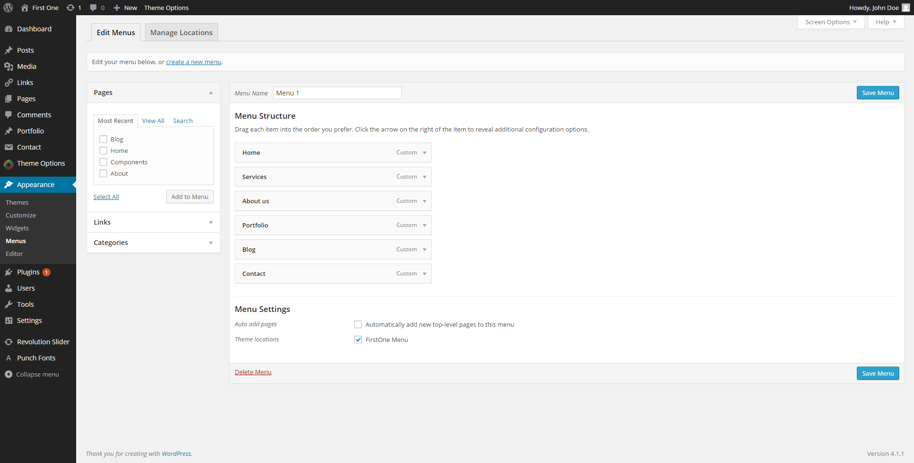
Set up main menu
This Theme uses wordpress built-in menus feature which can be found in Appearance > Menus.
Create the menu:
Assign the menu:
Add content in the menu:
If you imported the demo content you already have a menu and all you have to do is go in it's Menu settings > Theme Locations and check the FirstOne Menu checkbox.
If you want link a section of a page in the menu, do the following:
-Open the "Edit" row button of the section you want linked.
-In the field "Row ID", write an ID (example: blog_section).
-Update the page.
-Go to "Appearance" -> "Menus".
-Click on "Links" in the left.
-In the "URL" field, write the ID name of the section with # in front (example: #blog_section).
-Write whatever name you want in the "Link Text" field.
-Save the menu and now this link will point to that section
(Please note that the links will point to the section only when the page containing the section is opened)
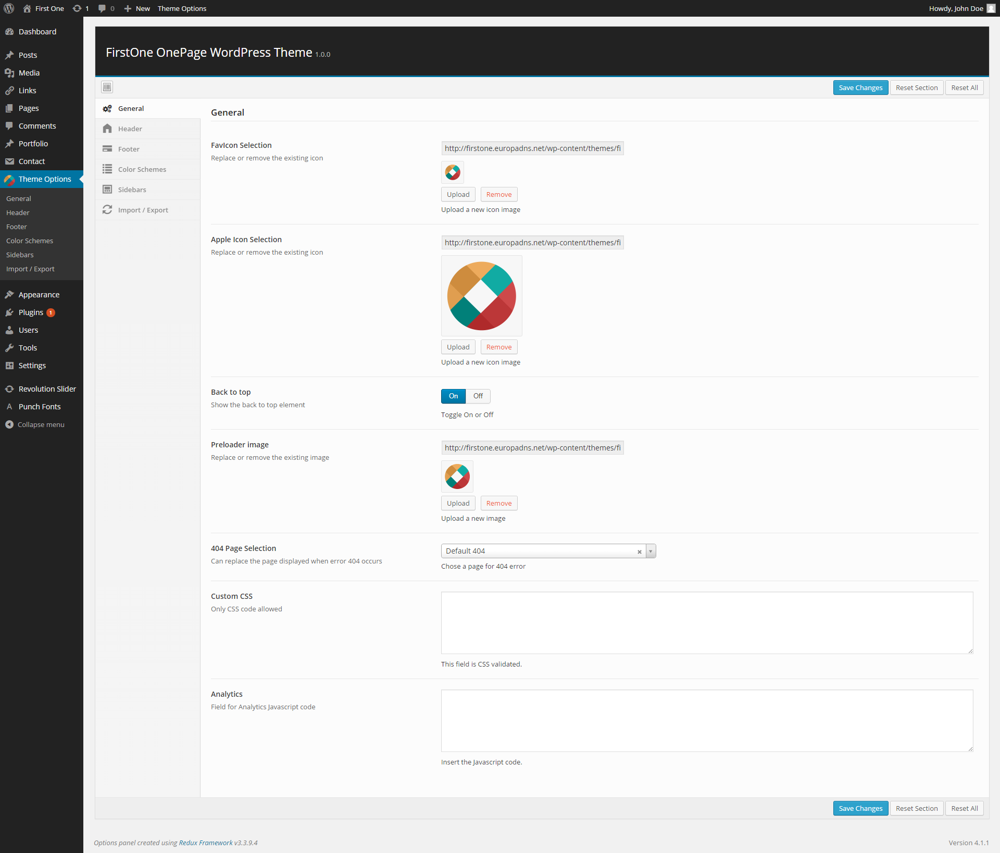
Change the logo
The logo image can be set in the Theme Options > Header
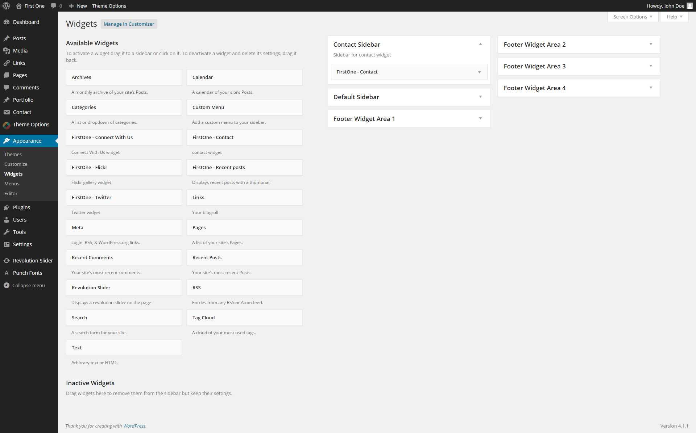
Add widgets
Use WordPress Widgets to add content and features to your Sidebars and Footer. Examples are the default widgets that come with WordPress; for example post categories, tag clouds, navigation, search, etc. Widgets require no code experience or expertise. They can be added, removed, and rearranged on the WordPress Administration Appearance > Widgets panel.
Page layout and management is pretty simple to use as well:
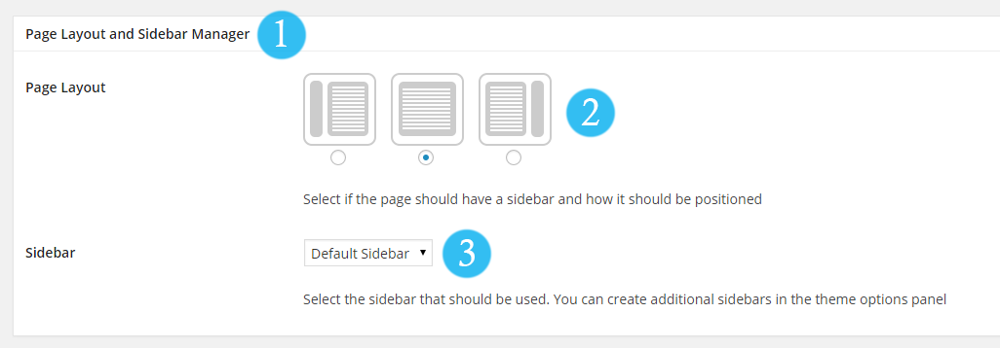
Page layout
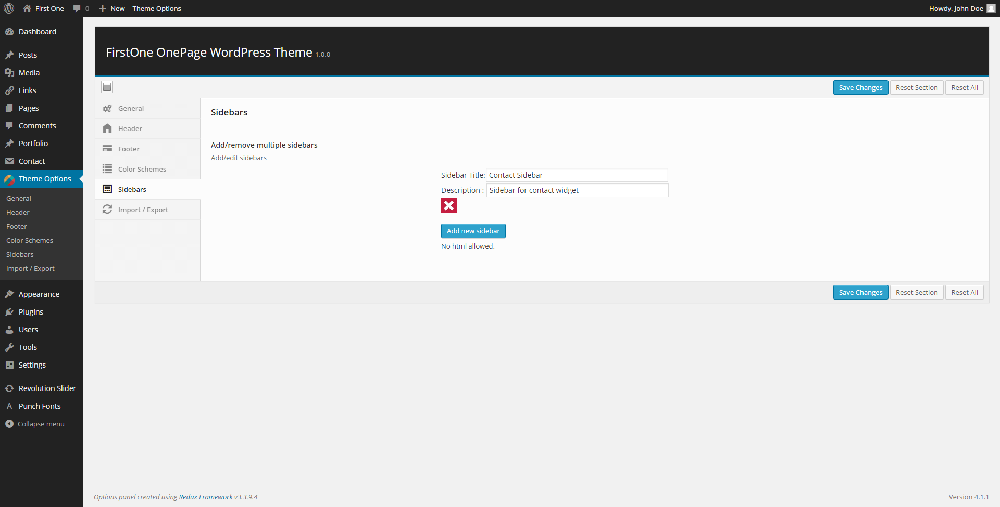
Sidebar management
You can add widgets in these sidebars in Appearance > Widgets
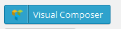
Visual composer Main Buttons
Visual Composer is a visual shortcode generator that allows you to build your layout painlessly without wasting your time with writing shortcodes. In the Visual Composer editor mode you'll have the "Add element" button, which you should click or drag to the working canvas, to add content block or row to your page. Clicking the "Add element" button will show the content element selection menu. Content blocks are divided into categories so you can filter. Alternatively you can type the shortcode name to filter down the items instead of search them visually.
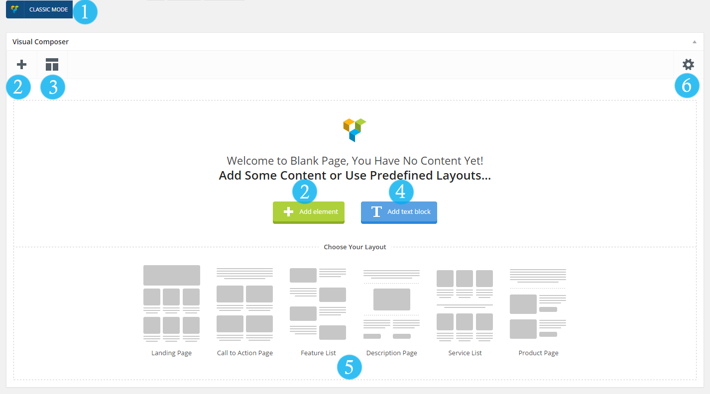
Visual composer Main Buttons
Visual composer Main Buttons based on above screenshot:
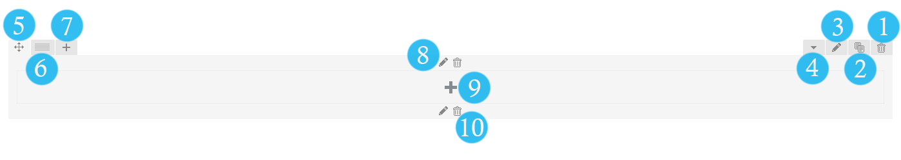
Visual Composer rows
Rows
Rows are used to divide your page into the logic blocks with columns, columns later will hold your content blocks. Rows can be divided into the layouts (eg. 1/2 + 1/2, 1/3 + 1/3 + 1/3, and so on). Your page can have unlimited number of rows. To change row's position, click and drag row's drag handler (top left row's corner) and drag row around (vertical axis). Please note that you can edit a row property to enable full width option or image and parallax background. Now you can add shortcodes such as full width slideshow, Portfolio strip or divide a page with Page divider (fullwidth style).
Introducing Row based on above screenshot :
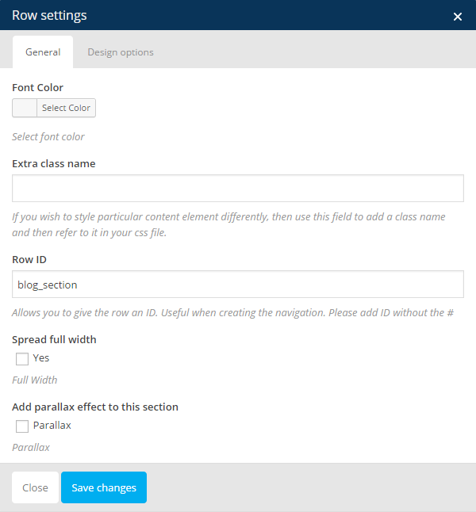
Enabled Parallax sections and fullwidth sections
To add a fullwidth or parallax section:
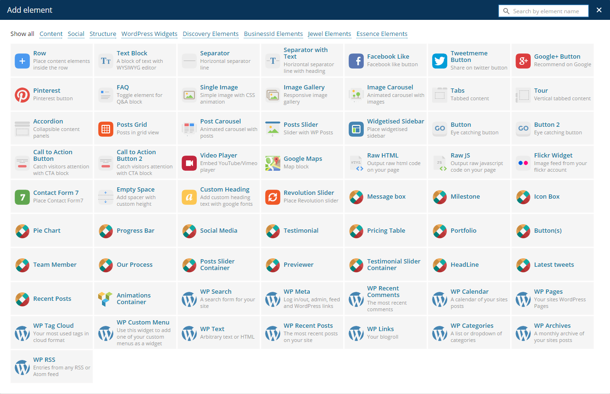
Content Element blocks list
The above is a list of available content elements that can be placed inside of the columns. Think of them as bricks. With those bricks you are building your layout. Most of the content elements have options, to set them click pencil icon. To save changes click save button.
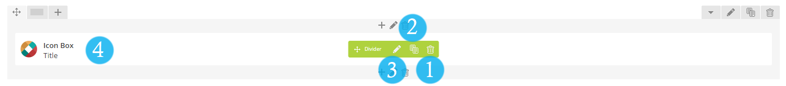
Element block
Introducing Element blocks based on above screenshot :
We extended the Visual Composer element list with the following:
Animations Container
This container will add animations to the components inside it
You can chose an animations type, add a delay and a speed(in milliseconds),
the offset is in percentage, no greater than 100 or smaller than 0.
The theme options panel is very intuitive and user friendly so there is no need for much explaining.
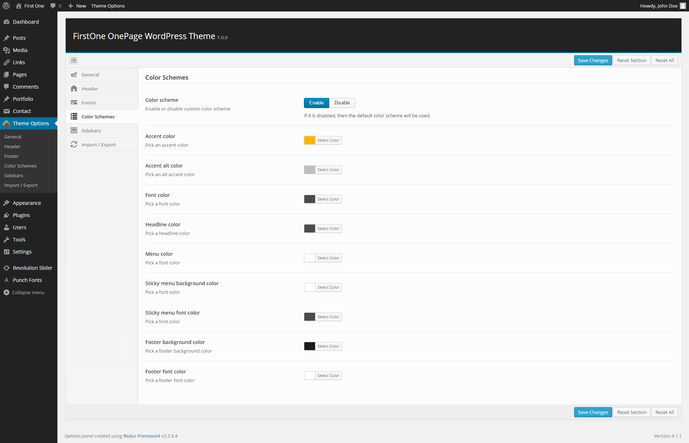
Color Schemes
The main colors of this theme can be easily changed through the Color Schemes tab.
You need to enable the color scheme first, otherwise the color selectors won't appear.
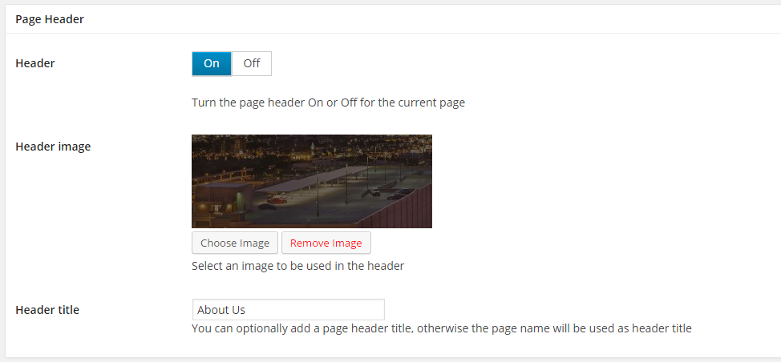
Add a page header
Pages and portfolio posts can have a Page Header image and title that will be displayed below the site header.
It's a simple feature that can display a title an a chosen image at the top of the page content.
The page header display can be toggled on and off.
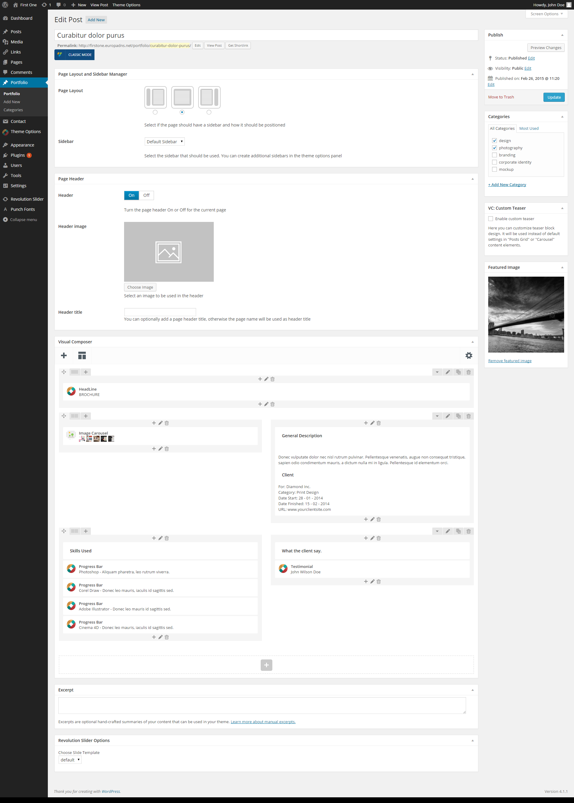
Add a portfolio item
The portfolio is created with a custom post type named Portfolio. It's basic functionality is the same as creating a new post.
The portfolio component displays the featured images with 400x400 pixels resolution.
How to add a new portfolio item
The demo content has already been loaded so all that remains is to edit the slides or create new ones. There is a special Visual Composer component for adding revolution slider on pages as well.
The contact form on the contact page is created using the contact form 7 plugin. You will find the layout for it included in /02.demo-content
FirstOne is localised and you can easily translate it to any language you like. Please note that the font family you are using in theme should support the language's special characters. so you will need to use a fontface that supports it.
Before translating your theme, you'll need to make sure WordPress is setup correctly with your locale. Open wp-config.php from your wordpress installation root folder and modify the line below, or add it if it is missing. Complete lists of codes can be found at (country codes) and (language codes).
/**
* WordPress Localized Language, defaults to English.
*
* Change this to localize WordPress. A corresponding MO file for the chosen
* language must be installed to wp-content/languages. For example, install
* de_DE.mo to wp-content/languages and set WPLANG to 'de_DE' to enable German
* language support.
*/
define('WPLANG', '');
Now you're ready to translate your theme. The easiest way to do this is by installing the Codestyling Localization plugin. Install and activate the plugin and go to Tools > Localization (shown in your language). Read Plugin documentation on how to use it to translate the theme. FirstOne's Textdomain is "firstone_domain".
{kind=link}
{kind=link}
{kind=link}
{kind=link}
{kind=link}
{kind=link}
{kind=link}
{kind=link}
{kind=link}
{kind=link}
{kind=link}
{kind=link}
{kind=link}
{kind=link}
{kind=link}
{kind=link}
{kind=link}
{kind=link}
{kind=link}
{kind=link}
{kind=link}
{kind=link}
{kind=link}
{kind=link}